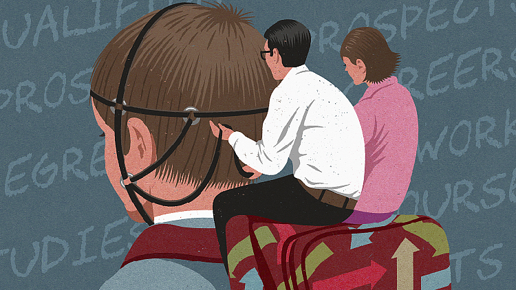

In East Asian countries, the importance of education is extremely exaggerated and students are encouraged to compete with each other under systems built upon high academic expectations. And these high expectations of parents, teachers and students themselves will sometimes push the students over their limits and give them stress. And this stress from the system will gradually evolve into serious mental issues. In Confucian Heritage Culture (CHC) societies, education is also closely tied to future success, which will also influence family honor. Thus, students will carry this extra burden of honoring their family. Another concept critical to understanding this phenomenon is "involution." The involution theory is a process where individuals are trapped in endless competition without achieving substantial progress. The prevalence of involution is inevitable in the development process especially in East Asian regions with high population density. And the only way to break involution is through national reforms. This issue of academic suffering is a systemic issue that has least relation with individual inabilities and weakness.
Image source: https://curiousboy2016.blogspot.com/2021/05/dse.html